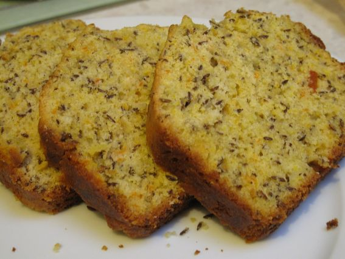

Bilbo's Seed-Cake

Description
"But I don't mind some cake — seed-cake, if you have any." - Balin.
Seed-Cake straight out of The Hobbit universe made by Bilbo Baggins himself.
Ingredients
- 3/4 cup butter
- 1 1/4 cups granulated sugar
- 2 tbsp milk
- 1 tbsp vanilla
- 2 eggs
- 1.5 cups flour
- 1 tsp salt
- 1tbsp caraway
Directions
- Preheat the oven to 350 degrees F (177 degrees C).
- Cream butter and sugar.
- Add milk, vanilla, and eggs. Mix well.
- In a separate bowl, combine flour and salt.
- Combine dry and wet ingredients.
- Mix in caraway.
- Pour into prepared baking dish. (To stay true to the book, use a round pan.)
- Bake a knife inserted in the center comes out clean (about 50 minutes).